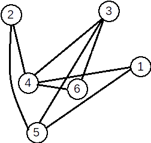

★Definiție. Fie G=(X, U) un graf neorientat. Se numeşte graf parțial al grafului G, graful neorientat G1=(X, U1), unde U1 ⊆ U.
Din definiție rezultă:
- →Un graf parțial al unui graf neorientat
G=(V,U), are aceeaşi mulțime de vârfuri ca şiG, iar mulțimea muchiilor este o submulțime a luiUsau chiarU. - →Fie
G=(X, U)un graf neorientat. Un graf parțial al grafuluiGse obține păstrând vârfurile şi
eliminând eventual nişte muchii (se pot elimina şi toate muchiile sau chiar nici una).
★Definiție. Fie G=(X, U) un graf orientat. Se numeşte subgraf al grafului G graful neorientat G1=(X1,U1) unde X1 ⊆ X iar U1 conține toate arcele din U care au extremitățile în X1.
Din definiție rezultă:
- →Fie
G=(X,U)un graf orientat. Un subgraf al grafuluiG, se obține ştergând eventual anumite
vârfuri şi odată cu acestea şi muchiile care le admit ca extremitate (nu se pot şterge toate vârfurile deoarece s-ar obține un graf cu mulțimea vârfurilor vidă).
★Definiție. Fie G=(X, U) un graf neorientat. Se numeşte graf complementar al grafului G, graful neorientat G1=(X, U1), cu proprietatea că două vârfuri x și y sunt adiacente în G1 dacă și numai dacă nu sunt adiacente în G.
★Exemplu:
| Graful inițial | Graf parțial | Subgraf | Graf complementar |
 |
 |
 |
|
S-au eliminat muchiile [1,2], [3,1] |
S-a eliminat vârfurile 3 5 și toate muchiile incidente cu ele. |
O muchie [x,y] apare în graful complementar dacă și numai dacă nu apare în graful inițial. |
★Observații. Un graf neorientat oarecare poate avea mai multe grafuri parțiale și subgrafuri, dar un unic graf complementar. Mai precis:
★Teoremă: Fie G un graf neorientat cu n vârfuri și m muchii. Atunci:
- →graful
Gadmite \( 2 ^ m \) grafuri parțiale; - →graful
Gadmite \( 2 ^ n – 1 \) subgrafuri; - →graful
Gadmite un unic graf complementar.
Justificare:
Să ne amintim că o mulțime cu a elemente are \( 2 ^ a \) submulțimi, inclusiv mulțimea vidă și mulțimea inițială. Atunci:
- →orice submulțime a mulțimii muchiilor induce un graf parțial. Sunt
mmuchii, deci \( 2 ^ m \) submulțimi, deci \( 2 ^ m \) grafuri parțiale. - →orice submulțime a mulțimii vârfuri induce un subgraf, mai puțin mulțimea vidă – un graf nu poate avea
0vârfuri. Similar ca mai sus, sunt \( 2^n – 1 \) subgrafuri. - →graful complementar este unic determinat, deoarece complementara unei submulțimi față de o mulțime dată este unic determinată.